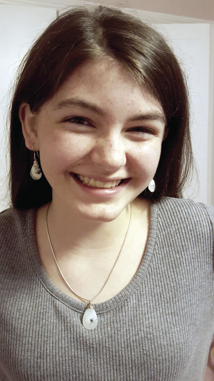

Home
Welcome back buddy! What you are reading right now is part of the home page. Below this are a few categories about my life. There are going to be many vague things because I don't think you need to know my personal problems. This includes feelings, some personal stories, and medical issues. Sorry but that's not gonna change. This also might be weirdly written. Sometimes it might be.....jumpy. I might be talking about one thing and then jump to another really quickly. There will also be many spelling mistakes because one, I can't spell and two, Caret doesn't have spell check. Shout out to my Engineering teacher, Mr. Rice, your awesome and a really good teacher. One of the best I've ever had. You challenged us in ways no other teacher could even think of. although making this website was a ton of fun it was also very frustrating......thanks (SARCASM). Let's take a minute to remember all the times I wanted to throw my computer at a wall (many many times 😂). At the top of the page is a navigation bar. If you put your mouse over those words there will be a green box. Depending on how long this is you can click those words and it will automatically scroll down to that category. Hopefully it works for you! That pretty much explains everything. Have fun reading!!!!
About Me
In this category there will be many smaller topics that I talk about, this goes along with all other main cateogries. It will be very jumpy because I'm super dumb and don't know how to finish sentences so that it goes along witht he next paragraph.
Birthday
I was born July 16th, 2003. Because I am a summer baby I have never had a school birhtday but while I still went to camp I would have three. I would have one with my family, Anisfield (a camp), and Camp Wise (another camp). It was really fun but I always wanted my friends to decorate my locker. They never get to because I'm a summer baby. Other than that I really love my birthday. I celebrate it with my mom and brother by baking a cake with them. It gets very messy but its a lot of fun. Something else that goes along with a birthday is a Bat mitzvah. Every Jewish girl, when they turn the age of 13, has a Bat mitzvah. This is where I learned a parsha and read it aaloud to my entire family and the temple. I personally didn't like learning the parsha but the party was a lot of fun. Below is the picture that was in Cleveland Jewish News of me. Personally I hate it but thought it would be cool to add it to this 😊.

Movies
I am in love with horror movies. They're just so good. Some of them are so bad they're funny. My favorties are The Conjuring (series included), The Shining, A Quiet Place, Get Out, It and a lot more that I don't feel like typing. The movies that are amazing are the ones that make you terrified, not just scared. Being scared is more like jumpscares, they make you scared for a couple seconds but afterward your fine, but being terrified is truly feeling fear. It's like being nervous with butterflys in your stomach but your heart is beating a lot faster. I do really like to watch movies because its a good time waster and the movies can be so intricate. Even movies with a low budget can make the plot so good that the awful graphics don't matter. Also, when I was a kid I would try to figure out how they got pictures to move and play ona screen. I always wondered about that but could never figure it out. Once I got my first phone I looked it up and was fascinated.
Dresses
For some unknown reason I really love to draw dresses. I can't draw very well in the first place but when I draw dresses I think they're pretty good. I can't draw a body AT ALL! It always ends up looking like a demonic creature. It's gross.....trust me. Even though I don't wear dresses, shirts, or shorts very often I love to draw them! It's weird but during class when I get bored I just start drawing. Although most of them do end up looking alike.
School
Right now I'm in highschool. So far it's been okay but I really don't like homework. Homework just stresses me out so much that I stop functioning. I love to take STEM/Engineering classes. My class are...
Spanish 3
AP Biology
Health
AP World History
Math 2 Honors
Engineering
and English 2
I love all my classes except AP World History. I don't like it because I think it's boring and I don't like my teacher. My favorite is AP Biology or Engineering because they are pretty laid back teachers. Plus I think both subjects are a lot easier than all the others. To be honest I actually do like school. I think a lot of the topics we talk about are very interesting but the stress from quizs or tests is so much that it becomes too hard to handle.
Family
Welcome to my family, we're insane 😄🤪👌. I live with one brother, who is 19 years old, and an awesome mom. My mom and dad have been divorced for approximately 10 years. I do have visitation with my dad and love him SOOOOOOO much. He was recently remarried to a woman named Sarah. I have a very large family on both my mom's and dad's side so I won't go into them. Plus I barely remember any of my dad's side. My mom works as a kejnkjnfkj scientist and my dad is a police officer. Right now my brother does not have a job or go to college but I think he's planning something out. My friends are such a huge influence on me and I love them all very much. Only some are considered part of my family. These include Rachael, Savanna, Emma, and Kyra
Future
Because I am now in high school I am considering many futures that I want. I can picture myself going to Case Western Reserve University. I still don't know what I want to study but then again I have two more years to think about it. My dream careers are mechanical engineer, architect, ASL interpreter, or a nurse. Right now I think I'm leaning toward an ASL interpreter mostly because I love the language. It's so complex but also not. It's weird and unlike any other language.
End
That's all for this page. Go back to the home page to see other parts of the website!!